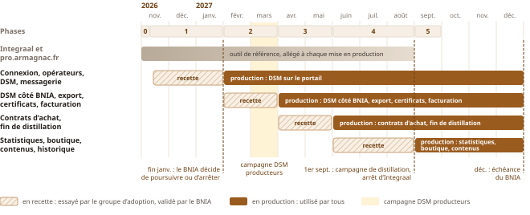

Calendrier
Remplacer Integraal par petites étapes
Un module en production, le suivant en recette, et Integraal en service jusqu’au bout.

Moins de risques
Des gains dès février 2027
Une adoption progressive